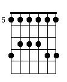

Acorduri Arpegiate
Sunt multi chitaristi care canta numai cu ajutorul unei pene. Din cand in cand insa doar pana nu ne ajuta si asa se folosesc degetele pentru a ciupi mai multe coarde in acelasi timp sau pe rand. Este practic un alt univers al chitarii care vi se deschide in fata. In aceasta lectie vom invata principiile de baza ale acestei tehnici, inca un acord barre si alte lucruri noi.
Ciupirea corzilor
 Exercitiul de astazi il vom executa incepand cu fretul (tasta) 5 (de la stanga la dreapta). Inainte de a descrie efectiv exercitiul trebuie sa clarificam cateva lucruri in legatura cu modul de folosire a degetelor pe mana stanga. Vom considera ca fretul 5 este langa marginea chitarii si vom aplica aceiasi metoda ca in lectiile trecute dar transpusa cu 4 pozitii astfel:
- degetul aratator va canta fretul 5
- degetul mijlociu va canta fretul 6
- degetul inelar va canta fretul 7
- degetul mic va canta fretul 8
Spuneam in cursul trecut ca o gama este o grupare de mai multe sunete distantate intre ele ca inaltimi dupa anumite reguli. Tot atunci am definit gama Do Major ca fiind alcatuita din 7 sunete. O gama formata din 7 note poarta numele de heptatonica (7 tonuri). O gama pentatonica este o gama formata dupa cum probabil ati intuit, din 5(penta) note. Regula de formare a acesteia dintr-o gama majora este foarte simpla. Se elimina nota a 4-a si a 7-a din gama majora si obtinem corsepondenta pentatonica. Astfel din Do major care avea C D E F G A B eliminam treptele F(Fa) si B(Si) si ramanem cu gama Do major pentatonica adica C D E G A.
(gasirea tastei 5)
Asa cum am enuntat mai sus si dupa regulile deja stiute vom apasa fiecare tasta de la stanga la dreapta de sus in jos conform diagramei.
Acordri Barre (Forma La Major)
Urmeaza doua acorduri foarte dificile. Unul dintre acestea este La major. La inceput veti avea o senzatie de inghesuiala pe tasta 2 unde trebuie pe trei corzi diferite (2,3,4) sa puneti fiecare deget respectiv inelar, mijlociu, index. Apoi ciupim numai primele 5 corzi conform diagramei. O alta modalitate comuna de a obtine acest acord este folosirea indexului peste cele 3 corzi, dar deocamdata acest lucru cu siguranta va fi foarte dificil. Repetati acest acord pana iese corect pentru ca pe cat este de dificil pe atat este de important.
Acordul E (Mi Major)
Acest acord este foarte similar cu acordul Mi minor. Daca observati are aceiasi pozitionare la care se adauga degetul index pe tasta 1 coarda 3. Asadar incepem prin a aseza degetul mijlociu pe tasta 2 coada 5, apoi inelarul pe tasta 2 coarda 4 (am obtinut Mi minor) si adaugam indexul pe tasta 1 coarda 3. Ciupim toate cele 6 corzi. Nu uitati scopul este ca per total sa sune sunetul intreg. Daca nu vi se pare ok ciupiti fiecare coarda pe rand si ajustati degetul acolo unde nu suna bine.
Acordul F (Fa major)
Si in sfarsit, ajungem la ultimul acord de baza. L-am lasat ultimul pentru ca este cel mai dificil pentru incepatori. Exista o vorba ca nu degeaba i se spune F :). Este un acord mai dificil pentru ca presupune un nou concept fata de ce am intalnit noi pana acum: folosirea unui singur deget pe doua corzi pe acelasi fret. Astfel intai punem indexul de-a-lungul primelor 2 corzi si il rotim usor spre capul chitarii. Mai clar o sa vedeti in film. Degetele mijlociu si inelar le punem conform diagramei pe coarda 3 tasta 2 si pe coarda 4 tasta 3. Atentie mijlociul si inelarul trebuie sa stea arcuite astfel incat sa nu atinga celelalte corzi. Tendinta la inceput este de a le sprijini pe celelalte corzi si asta nu este de dorit pentru ca le va bloca. De ciupit nu se ciupesc decat primele 4 corzi. O sa vi se para aproape imposibil de executat acest acord, dar in cateva saptamani ar trebui sa inceapa sa sune. Eu unul dupa 3-4 saptamani am reusit sa il fac sa sune si dupa 2 luni sa il fac sa sune f bine. Acum depinde de cat timp repetati si de cata vointa aveti. Din experienta mea de trainer de software am constatat ca oamenii evita lucrurile dificile. Sfatul meu este sa il repetati oricat ar parea de greu pentru ca atunci cand va iesi veti fi multumiti. Sunt multe cantece care se bazeaza pe el si e pacat sa le ratam nu?
Pozitionarea mainii drepte
Ritmul de astazi este foarte asemanator cu cel din lectia trecuta. Aici observam ca pe timpul intai avem doar bataie in jos, iar in sus trecem cu degetele pe deasupra corzilor. Atentie miscarea mainii trebuie sa fie mai mult din incheietura, nu din antebrat. Astfel mana dreapta trebuie sa fie cat mai relaxata. Restul ritmului este absolut identic. Daca veti incerca acest ritm veti observa chiar ca este un pic mai usor decat cel din lectia trecuta datorita acestor doua pauze din cadrul sau. Ca de obicei trebuie sa il exersam mai intai la o viteza lenta si fara schimbari de acorduri, apoi din ce in ce mai repede, pentru ca la final sa folosim si schimbari de acorduri. Acestea fiind spuse o sa trecem la partea de cantece a lectiei in care vom aplica cele invatate mai sus.
Link-uri cu tabulaturile melodiilor cantate:
Mihai Margineanu - Foaie verde, Foaie fraga
Mircea Rusu - Omul bun si pomul copt
Vama Veche - Calul din Marlboro
Soul Asylum - Runaway Train